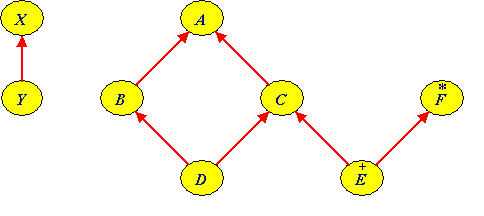
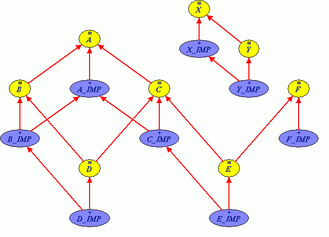

Our goal is to generate a mapping that is both:
Efficiency is always important for a compiler, no one wants their code to run slowly because the compiler did a very bad job at generating the code. Here efficiency means to generate as few as possible interfaces to map the Eiffel classes.
CLS compliant is very important for people who choose Eiffel as a programming language (mostly because of its benefits: assertions, genericity,...) and who want to produce reusable components.
Basically, we will promote classes that are multiply-inherited into .NET interfaces. To give an example if in Eiffel you have:
class C inherit A B end
then in .NET you might have the following set of classes and interfaces:
class A implements IA class B implements IB class C implements IA and IB interface IA interface IB
This is one way of seeing it, but we could generate it in many different ways. It is important that:
Because of the last point, we decided that we would indeed generate the following set of classes and interfaces:
class A_IMP implements A class B_IMP implements B class C_IMP implements A and B and inherits A_IMP interface B interface C
Note:
Class C_IMP inherits most of its implementation from A_IMP. This is done to
avoid code duplication.
So if in Eiffel you have the following piece of code:
b: B c: C create c b := c
It will translate in C# as:
B b; C c; /* Method 1 */ c = new C_IMP(); b = c; /* Method 2 */ c = EiffelFactory.new_C(); b = c;
Note:
Creation is performed in two different ways. One through the use of a .NET
constructor, and the second one through a factory call. Both will be implemented
in case there is no way to use the .NET constructor mechanism, but we will try
to stick as much as possible on the use of .NET constructor.
Let's suppose we have the following example. In which we do most of what can be seen in an Eiffel library that uses multiple inheritance.
class A feature f is do ... end g (x: X) is do ... end end
class B inherit A rename f as h redefine g end feature g (y: Y) is do ... end end
class C inherit A end
class D inherit B select g end C rename g as A_g select f end end
deferred class F feature f is do end end
class E inherit C undefine f end F end
class X end
class Y inherit X end
This is better described by the following BON diagram:

Let's have a look at what we should generate as an inheritance hierarchy:

The hierarchy is quite complex, but it is required to export the Eiffel multiple inheritance to other languages. So far not other simple solutions have been found, apart from implemented natively multiple inheritance on .NET.